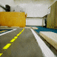
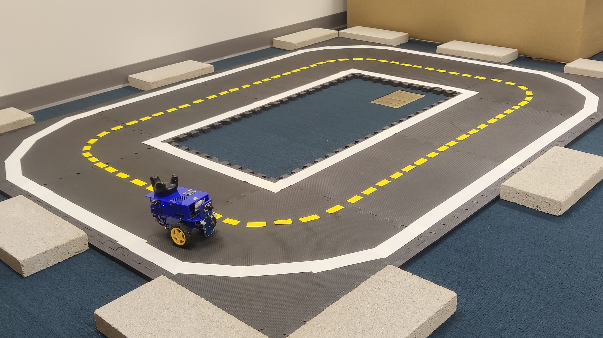
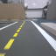

The DRAW world model is trained to encode states into a latent representation, from which states, rewards, terminations, and future latent states are predicted. An RL agent is trained in the world model via synthetic rollouts.
World model dynamics can be calibrated to a target environment by training a residual error correction on latent state dynamics predictions, allowing the RL agent to be trained under rectified dynamics.
Sim to Real Transfer for Duckiebots Lane Following
We evaluate ReDRAW in a sim-to-real robotic lane-following task using the Duckietown platform. The agent controls a wheeled robot to navigate a track while staying centered in its lane. To enable sim-to-real transfer, we create a simulated environment in Unreal Engine using a Gaussian splat reconstruction of the robot's surroundings. The simulation approximates real dynamics, though details like precise handling differ from the real robot. We also generalize perception from sim to real by applying image augmentations to training-time encoder inputs.
We train our DRAW world model with intrinsically-motivated online exploration in simulation and calibrate its dynamics with ReDRAW on 10K timesteps (17 minutes) of offline human demonstrations, producing a successful agent in the real environment. Notably, ReDRAW does not require real reward labels to adapt.
Gaussian Splat Digital-Twin Simulation

Sim Image Observation:
Real Robot Environment
Real Image Observation:
Transferring from Simulation to Real
In the real environment, ReDRAW achieves high average dense rewards by training an agent with corrected world-model dynamics and staying close to the lane center. Due to mismatched world-model dynamics, zero-shot DRAW incurs low rewards by veering far from the lane center. The ReDRAW dynamics residual avoids overfitting while traditional world-model fine-tuning fails in this low-data regime.
Transferring from Simulation to Real with Reversed Real Actions
In a more extreme task, we transfer from sim to a version of the real environment where actions are reversed. ReDRAW is the only method that successfully adapts and completes laps on the real robot. ReDRAW can be effectively used to adapt mismatched simulation dynamics to reality using a limited offline real dataset without rewards, and ReDRAW can also be combined with visual adaptation methods in order to do so.